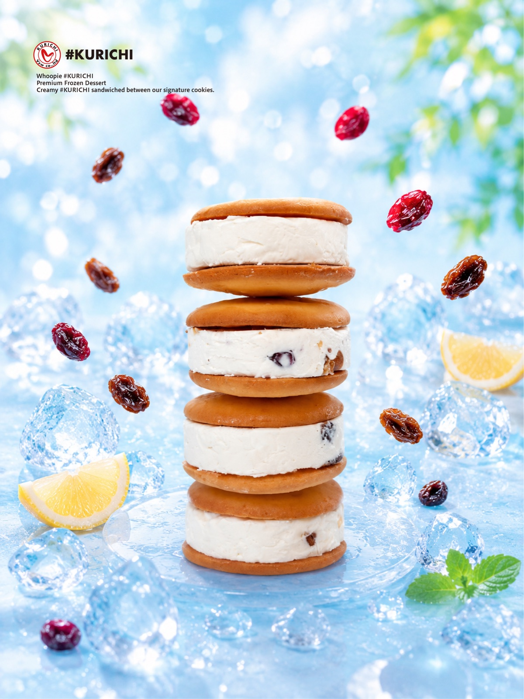
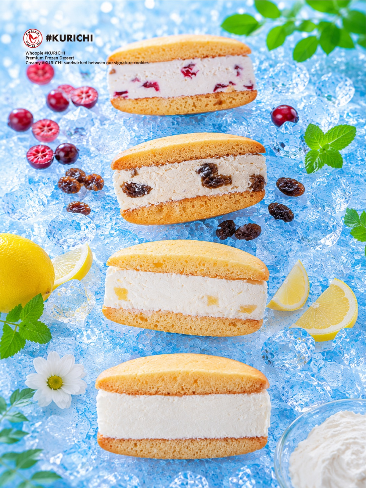
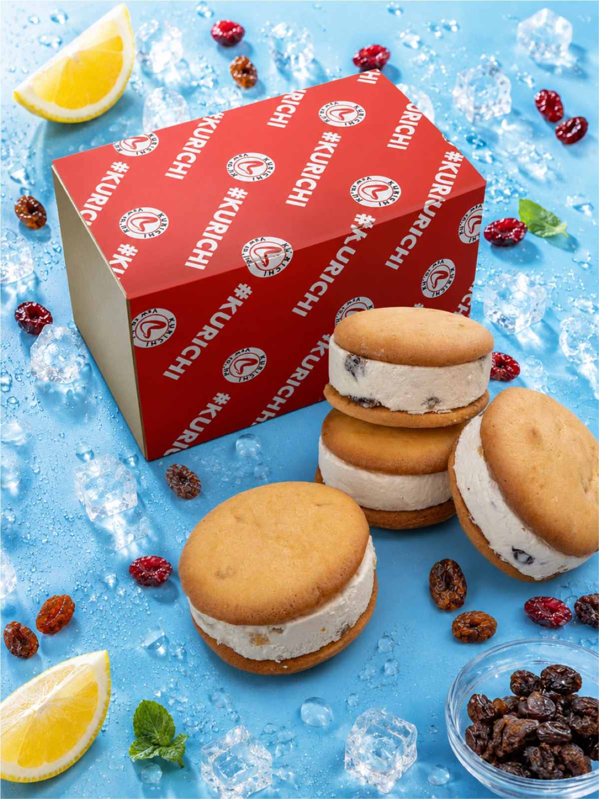
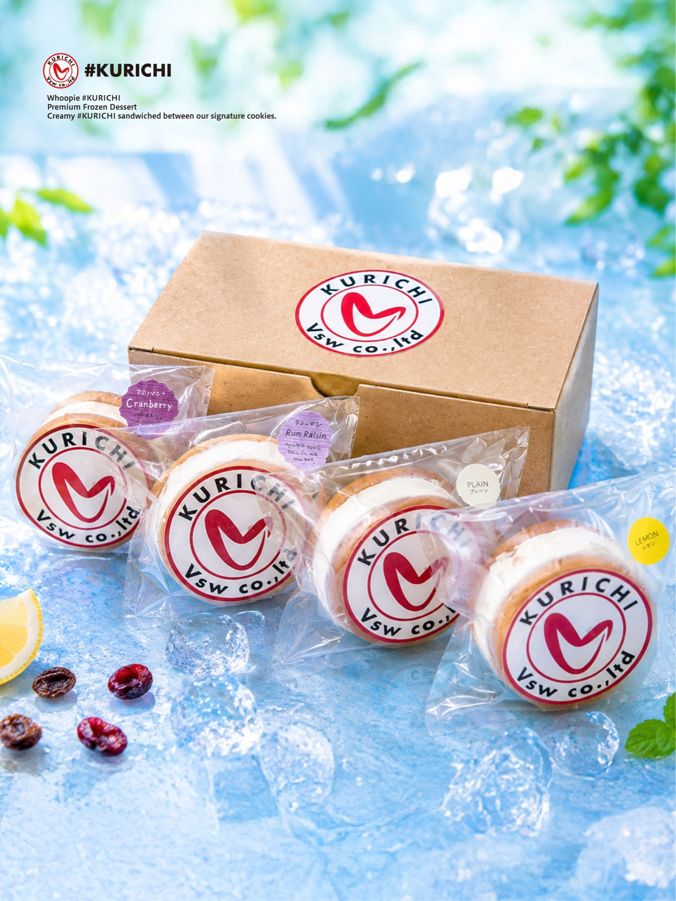
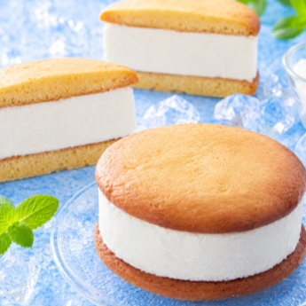
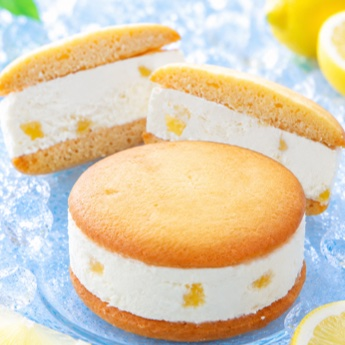
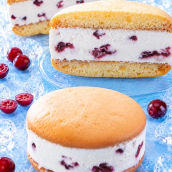
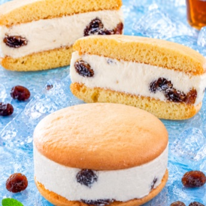

冷たく楽しむ、新感覚クリームチーズスイーツ。
「ウーピー#クリチ」新登場。
クリームチーズをもっと自由に、もっと楽しく。
特製クッキーで濃厚な#クリチをサンドした、アイス感覚のごほうびスイーツ。
CREAM CHEESE × COOKIE
アメリカの伝統菓子「ウーピーパイ」に、
#クリチのクリーミーさをアレンジ。
特製クッキーで、クリームチーズを贅沢に使用した#クリチdiscをたっぷりサンドした、アイス感覚で楽しめる新しいスイーツ「ウーピー#クリチ（Whoopie Kurichi）」。アメリカの伝統菓子「ウーピーパイ」にインスピレーションを受けながら、#クリチらしいクリーミーな味わいへとアレンジしました。
しっとりクッキー×#クリチdisc、
アイス感覚で楽しめる新食感。

01 / Cookie & Kurichi Disc
しっとりクッキー×#クリチdisc
外側はしっとりやわらかな特製クッキー。その間に#クリチdisc（クリームチーズを贅沢に使用した当社オリジナルクリーム）をサンド。ひと口食べると、クッキーの優しい甘さとクリームチーズの爽やかな酸味が絶妙に重なり、最後まで飽きることなく楽しめます。

02 / Ice Cream Sandwich Style
アイス感覚で楽しめる
ウーピー#クリチは冷凍保存が基本。少し解凍して食べれば、アイスサンドのようなひんやり食感、なめらかに溶ける#クリチdisc、クッキーのしっとり感。この3つを同時に楽しめます。暑い季節にもぴったりの、ご褒美スイーツです。

03 / Compact & Easy
手軽に食べられるサイズ
通常の#クリチよりもコンパクトなサイズなので、おやつタイム・コーヒーブレイク・手土産・差し入れにもぴったり。ワンハンドで食べられるので、気軽に楽しめます。見た目もかわいく、ギフトやSNS映えにも喜ばれます。
4つのフレーバー
プレーンのなめらかな味わいから、果実系の爽やかさまで。気分に合わせて選べます。

Plainプレーン
Lemonレモン
Cranberry Nutsクランベリーナッツ
Rum Raisinラムレーズン＊クランベリーナッツにはクルミを使用しています。
ウーピー#クリチ ギャラリー
断面、パッケージ、4つのフレーバー。写真でめぐるウーピー#クリチ。
クリームチーズを、
もっと自由に、もっと楽しく。
通常の#クリチとは違う、ウーピー#クリチだけの魅力。
冷凍庫から出したては固め、少し置くとアイスサンドのようなひんやり食感に。
「クリームチーズをもっと自由に。」
そんな#クリチの世界を、ウーピー#クリチでも。
#クリチとの違い
| #クリチ | ウーピー#クリチ | |
|---|---|---|
| ジャンル | クリームチーズバーガー | アイススイーツ |
| サンド | バンズでサンド | 特製クッキーでサンド |
| スタイル | バーガースタイル | アイススイーツスタイル |
| ボリューム | 食べ応え重視 | 手軽に食べやすい |
| おすすめシーン | ボリューム感がある | おやつ・デザート向け |